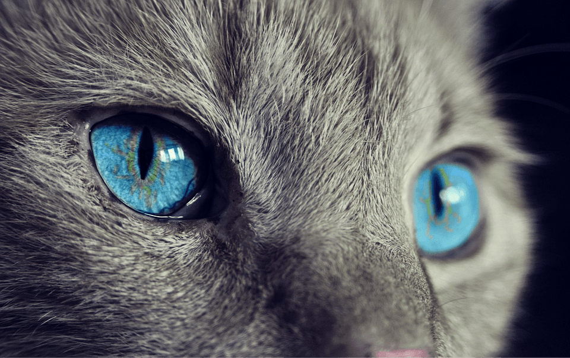

Existen algunas bibliotecas para extender la funcionalidad de bootstrap en el trabajo con imágenes:
- Blueimp: crear galerías de imágenes y carruseles interesantes con Bootstrap y JS.
Aspecto

Código
Explicación
- Para redondear los bordes de una imagen usamos la clase
img-rounded.
- Para que una imagen sea responsive y se adapte automáticamente a su contenedor padre usamos la clase
img-responsive. Esta clase aplica display: block; , max-width: 100%; y height: auto; a la imagen.
- Para recortar una imagen de forma circular usamos la clase
img-circle.
- Para crear un thumbnail de una imagen usamos la clase
img-thumbnail.